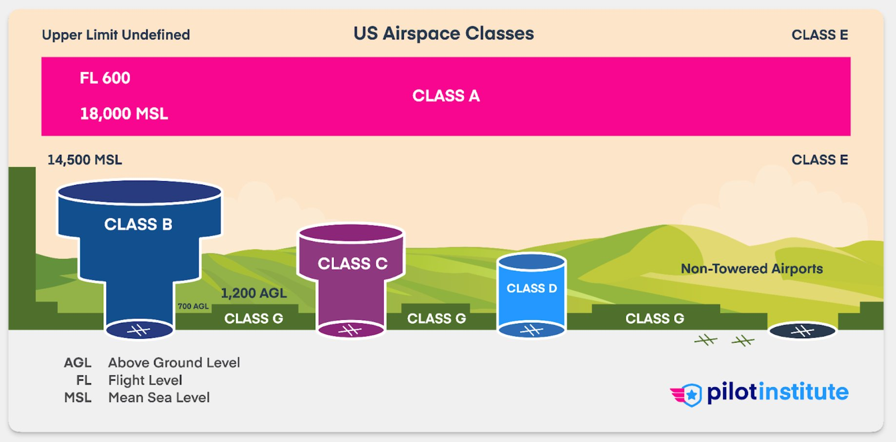

Drone Program
Drone ProgramAirspace
Six classes, one question
Controlled or uncontrolled — and if controlled, how to get authorization?
Airspace
Classification at a glance
Regulated
Open
A
From 18,000’ MSL up — drones prohibited.
Prohibited
B
Centered over the nation’s busiest airports.
Authorization required
C
Centered over medium-sized airports.
Authorization required
D
Centered over small city / rural airports, 4 NM radius.
Authorization required
E
Near non-towered airports; controlled but not A, B, C or D.
Required at the surface (E2)
G
All other airspace not classified as controlled.
No approval needed
Airspace
Airspace classification, in profile

Source: FAA Pilot’s Handbook of Aeronautical Knowledge, Ch. 14 · not to scale · click a class
{{ activeClass }}
{{ activeTitle }}
{{ activeBody }}
Drone authorization
{{ activeAuth }}
Airspace
Flat on the chart, a volume in the air
Worcester Regional (ORH) Class C, extruded over the Google Earth terrain — the shelves you see on the chart are ceilings and floors you fly under.
Airspace
Aeronautical charts: airspace & airports
Chart legend — click to locate
{{ chartDesc }}
Below 18,000’ MSL only · all times local · skyvector.com
Airspace: Class C
Reading Class C: Burlington (BTV)
Chart legend — click to locate
{{ cbDesc }}
Authorization required throughout · skyvector.com
Airspace: Class E
Surface, 700’, or 1,200’? Augusta, ME
Chart legend — click to locate
{{ agDesc }}
Only E2 at the surface needs authorization · skyvector.com
Airspace: Class E
Class E extensions: Martha’s Vineyard
Chart legend — click to locate
{{ mvDesc }}
Extensions carry the same rules as the surface area · skyvector.com
Airspace: Class G
Uncontrolled
{{ item }}
G
Drone operation in Class G airspace does not require FAA approval.
Airspace: Class E
Controlled, and easy to miss
{{ item }}
E2
Drone operation in Class E2 airspace below 400’ AGL requires FAA approval.
* where Class E is the primary airspace for an airport
Airspace: Class E
Reading Class E on the chart
Class E2
Starts at the surface, designated for an airport — Hancock County / Bar Harbor.
Class E
Starts at 700’ AGL — above the drone envelope, no authorization needed.
Airspace: Class E
Where does the floor sit?
The soft magenta vignette marks a 700’ AGL Class E floor; unshaded country is 1,200’ AGL.
Airspace: Class E and Class G
Your 400 feet, in cross-section
Surface to 400’ AGL is your envelope — Class G, unless an E2 column reaches the ground beneath you.
Before the flight
Airspace notifications
TFRs
Temporary Flight Restrictions — a volume of restricted airspace, often for VIP movement, wildfires, or special events.
NOTAMs
Notice to Air Missions — issued so pilots know the hazards along their route, at departure, destination, and alternates.
Airspace environment & authorizations
UAS Facility Maps
Each cell is the maximum altitude the FAA will normally approve. Medford sits under the Logan Class B environment.
Airspace environment & authorizations
LAANC
Low Altitude Authorization and Notification Capability — airspace authorization built for drone pilots.
Source: FAA
In the field
Requesting authorization on site
B4UFLY is retired — we plan and request in Aloft.
{{ item }}
Final Thoughts
01
Identify your airspace class before every flight — the chart, the facility map, then the app.
02
Class G needs no approval. Class B, C, D and surface-level Class E2 do.
03
Airspace is not static — TFRs and NOTAMs can close a legal site on the day you fly.
References & resources
- {{ ref.name }} — {{ ref.url }}
TUFTS DRONE PROGRAM · TUFTS UNIVERSITY DATA LAB
← Home
Speaker Notes · {{ notesSlideLabel }}
{{ notesText }}